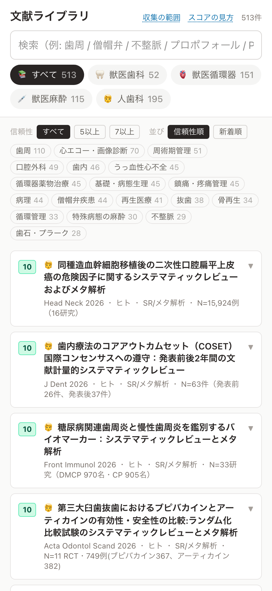
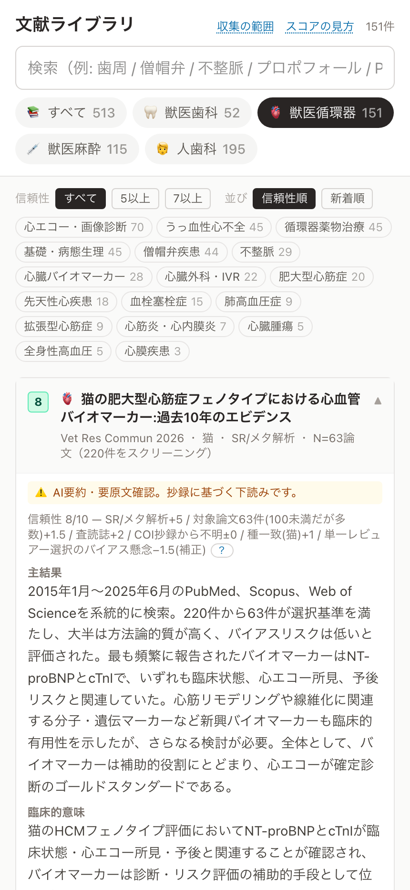
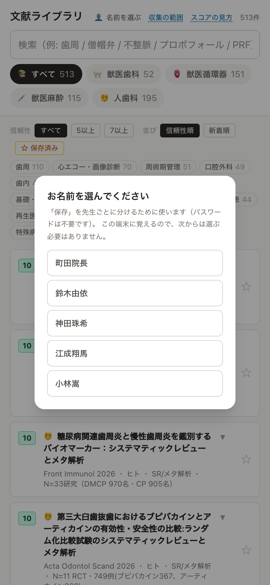
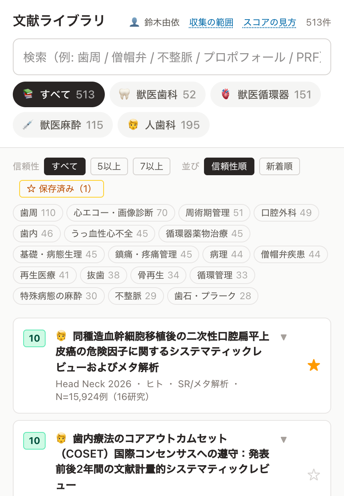
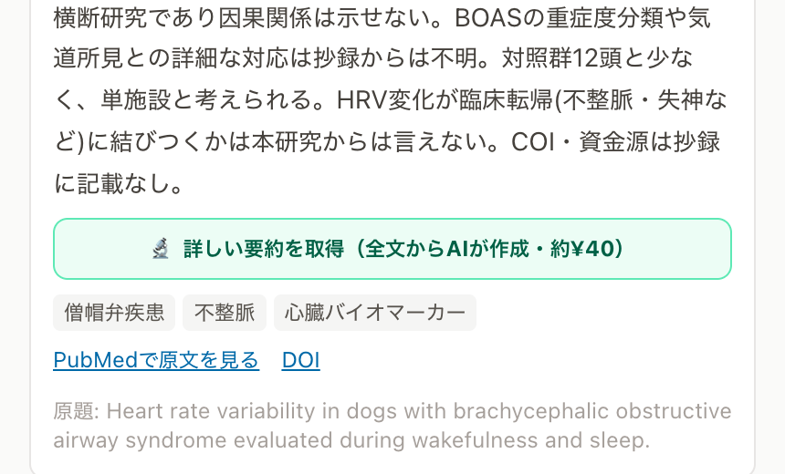
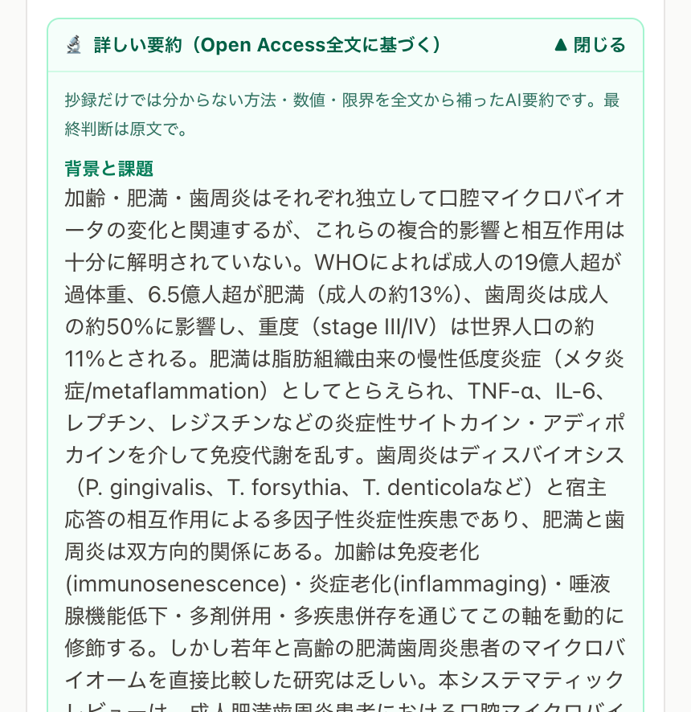
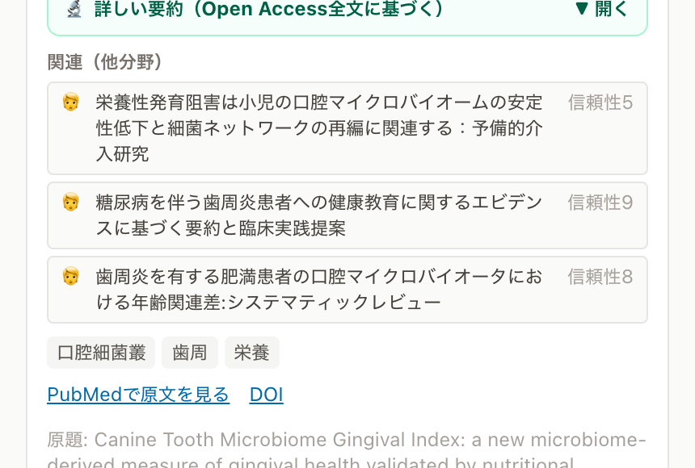
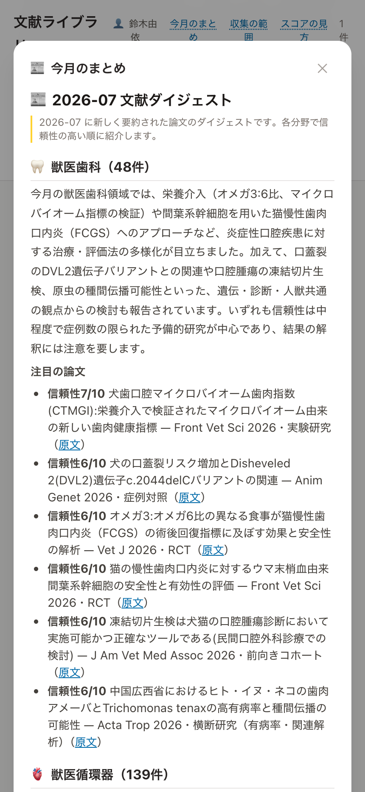
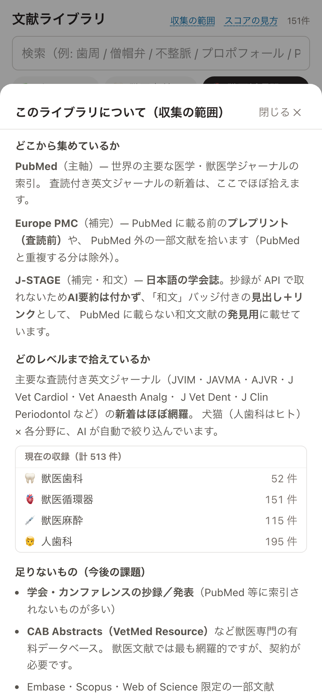
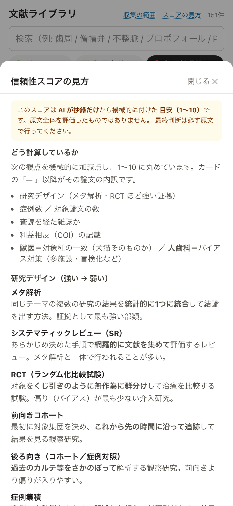

上から順に、検索ボックス → 分野タブ → 絞り込み（信頼性・並び順・タグ） → 論文の一覧です。一覧は既定で信頼性の高い順に並びます。
5以上 7以上でエビデンスの強い論文だけに絞れます。並びは「信頼性順／新着順」。
一覧のカードをタップすると開いて、日本語の要約が読めます（ファイルを探す必要はありません）。開いた画面には次が入っています。
| 項目 | 内容 |
|---|---|
| 左の数字 | 信頼性スコア（1〜10）。研究デザインや症例数などから機械的に付けた目安。緑=高い/水色/黄色/灰=低い。 |
| 主結果 | 抄録に書かれた結果（数値は原文どおり）。 |
| 臨床的意味 | 一般論として臨床的に何を意味するか。 |
| 既存との差分 | 従来と比べて何が新しいか。 |
| 限界・未解決 | この研究から言えないことの線引き。 |
信頼性スコアの内訳の横にある 「？」 を押すと、採点の考え方（メタ解析とは・対象論文とは 等）が読めます。カード下部の原文リンクから PubMed 等の原著に飛べます。

「あとで読みたい」「これは残しておきたい」という論文に、先生ごとに ★ を付けて保存できます。パスワードは不要です。
初めて開いたときに 「お名前を選んでください」 が出ます。ご自分の名前を選ぶだけ（パスワードなし）。その端末が名前を覚えるので、次からは選び直し不要です。


各カードの要約は抄録（アブストラクト）から作っています。もっと深く読みたい時は、カードを開いて下の方にある 「🔬 詳しい要約を取得（全文からAIが作成・約¥40）」ボタンを押すと、無料公開されている全文（Open Access）から AIが方法・詳細な結果（数値）・限界・読み解きの注意まで詳しくまとめ直します。


カードを開くと、テーマが近い別分野の論文が「関連（他分野）」に並びます。とくに 獣医歯科⇔人歯科は主題が共通するので、人の歯科のエビデンスを並べて見られます。項目を押すとその論文へ移動します。

ヘッダーの「今月のまとめ」を押すと、その月に新しく増えた論文の分野別の傾向と、信頼性の高い注目論文（原文リンクつき）が読めます。毎月はじめに自動で作られます。

ヘッダー右上に、いつでも開ける説明が2つあります。
どこから論文を集めているか（PubMed など）、どのレベルまで拾えているか、まだ足りないものを正直に書いています。

スコアの付け方と、メタ解析・システマティックレビュー・RCT・対象論文などの用語をやさしく説明しています。

PubMed に載らない日本語の学会誌（J-STAGE）も、見つけられるように載せています。これらは和文バッジが付き、 AI要約はありません（学会誌側で抄録が取得できないため）。見出しとリンクだけなので、内容は原文リンク（J-STAGE）でご確認ください。「PubMedには無いけれど、こんな和文報告がある」と気づくための項目です。
| Q | A |
|---|---|
| 要約をそのまま鵜呑みにしていい？ | いいえ。AIが抄録から作った目安です。必ず原文（リンク）でご確認ください。 |
| 下の方の論文／和文カードが出てこない | 一覧の下に「もっと見る」があります。押すと残りが表示されます（和文カードは信頼性なしなので最後尾に並びます）。 |
| 循環器と麻酔の両方に同じ論文が出る | 「心疾患の子の麻酔」など両分野に関係する論文は、両方のタブに出ます（正しい動きです）。 |
| お金はかかる？ | 基本は無料です。カードを開いて要約を読むのも、保存も、今月のまとめも無料。「🔬詳しい要約を取得」ボタンを押した時だけ1回 約¥40（読みたい論文だけ・一度作れば以後無料・全文が無い論文は無課金）。 |
| 保存した論文が消えた／別のPCでも見たい | 右上の「👤 お名前」がご自分か確認してください。同じ名前なら院内でも自宅でも同じ保存が見えます（保存はサーバ側に残るので、更新や改修では消えません）。 |
| 新しい論文はいつ増える？ | 毎朝、自動で増えます。操作は不要です。 |
| こんな分野も欲しい／こう直してほしい | 院長までお知らせください（分野の追加も、要望の反映もできます）。 |